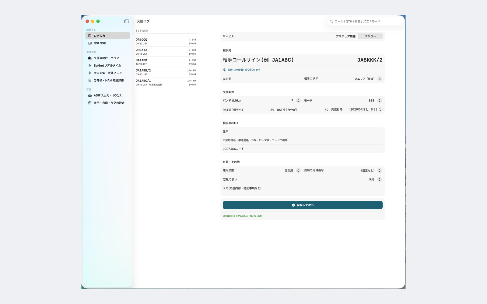
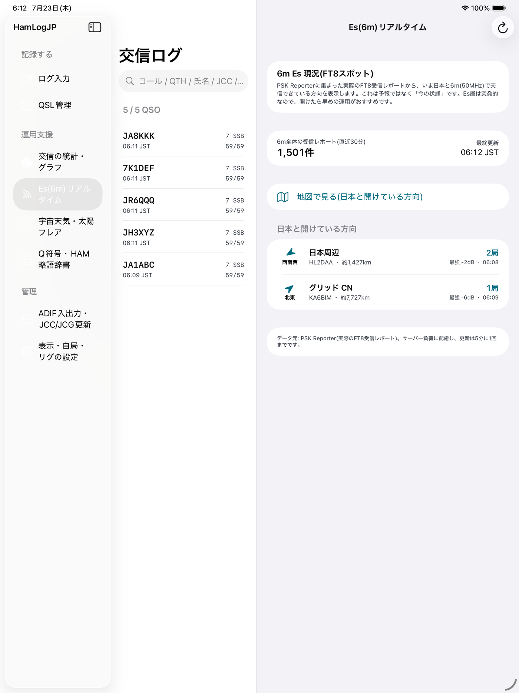
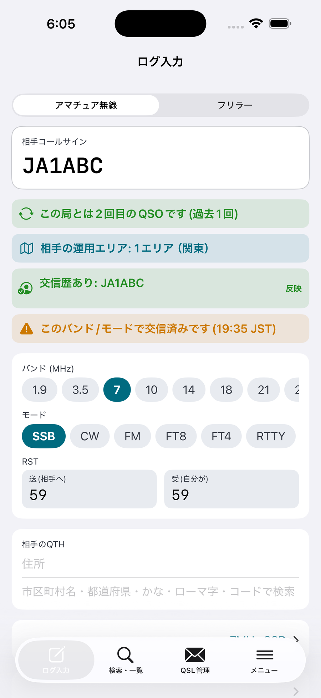
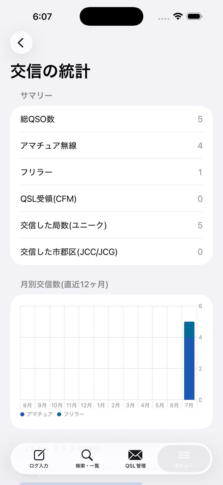

アマチュア無線とフリラー(デジ簡・CB・特小・LCR)の両方に対応。ログはすべて端末内に保存、アカウント登録も不要です。
iPhone ・ iPad ・ Mac 対応 | 無料版あり

「Macで使える日本語のログソフト」を探していた、すべてのハムとフリラーへ。
アマチュア無線とフリラーを瞬時に切替。デジ簡82ch・CB 8ch・特小・LCRに対応します。
相手コール入力で過去の交信を自動表示。初回か何回目かも判定し、同一バンド/モードの重複も警告します。
全国の市郡区1,700件超を内蔵。漢字・かな・ローマ字で検索でき、JA1ABC/2 の運用エリアも自動補完。
月別・バンド別・モード別に交信を振り返り。運用の傾向がひと目で分かります。
PSK Reporterの実データから、いま日本と開けている方向を地図で表示(プレミアム)。
交信ログは端末内保存で外部送信なし。ADIF入出力でTurbo HAMLOG等との受け渡しも可能(プレミアム)。
左に機能、中央に交信ログ、右に入力欄。過去の交信を見ながら次のログを打てる、大画面ならではの使い心地です。iPadでも同じ3ペインで動作します。

コール欄を最大化し、バンドやモードはタップで選択。交信しながら片手でサッと記録して、そのまま次の交信へ流れます。

月別・バンド別・モード別のグラフで、これまでの運用をまとめて確認。年間の交信数やアクティブなバンドが見えてきます。

まずは無料で。物足りなくなったらプレミアムへ。